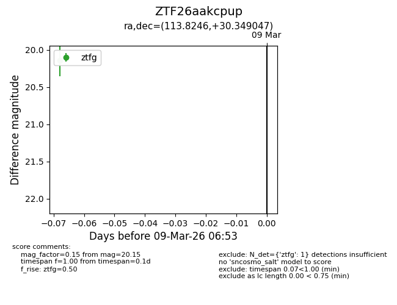
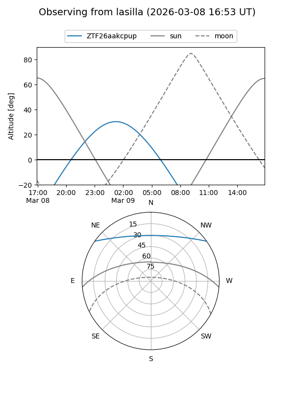
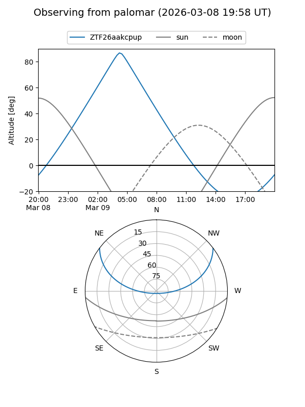

ZTF26aakcpup
Target ZTF26aakcpup at 2026-03-09 06:54
Aliases and brokers:
FINK: link
Lasair: link
ALeRCE: link
alt names
ZTF26aakcpup (ztf,fink_ztf)
Coordinates:
equatorial (ra, dec) = 113.8246,+30.34905
equatorial (HMS+DMS) = 07:35:17.92,+30:20:56.57
galactic (l, b) = (189.0657,+22.11591)
Flags:
Photometry:
last ztfg=20.15
1 ztfg detections
Lightcurve

Visibility


Additional plots